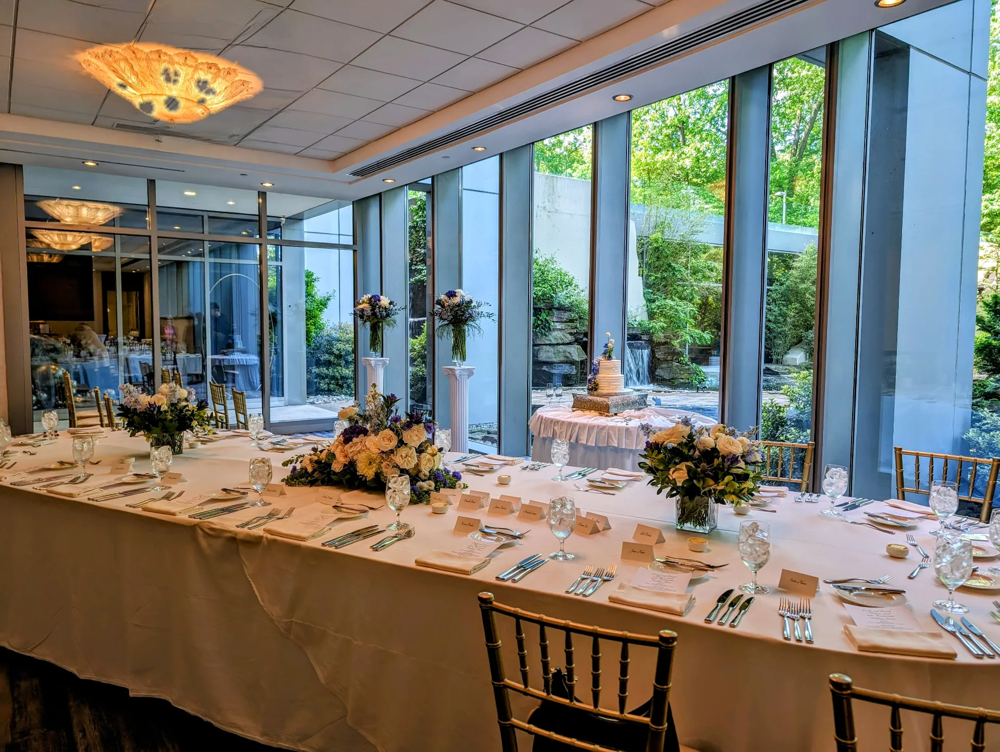

Intimate weddings
From $1,800
- Personal flowers for up to 6 people
- Ceremony accent pieces
- Pickup or local delivery

Romantic, story-driven design
From bouquets and personal flowers to centerpieces and installations, each design is shaped around your venue, palette, and the way you want the day to feel.
Designed for intimate, meaningful celebrations. Thoughtful guidance, polished details, and flowers that photograph beautifully.
From $1,800
From $3,500
From $6,500
Couples usually aren’t looking for a one-size-fits-all floral package — they want flowers that feel like them.
From the first consultation to final setup, every bouquet, centerpiece, and installation is built around your story, your space, and the atmosphere you want guests to remember long after the celebration ends.

Ideal for: micro-weddings, intimate receptions, and story-driven celebrations across Fairfax and the DMV.
Share your venue, date, aesthetic, guest count, and which floral moments matter most to you.
Receive a custom floral direction with pricing guidance and ideas tailored to your celebration.
We adjust palette, bloom choices, and scale until everything feels aligned with your vision.
Delivery and on-site styling are coordinated carefully so the flowers arrive calm, fresh, and celebration-ready.
The final florals should feel beautiful in photos, natural in the room, and deeply connected to your story.


Start with your date, venue, and floral priorities, and let the studio shape something personal, polished, and deeply memorable.